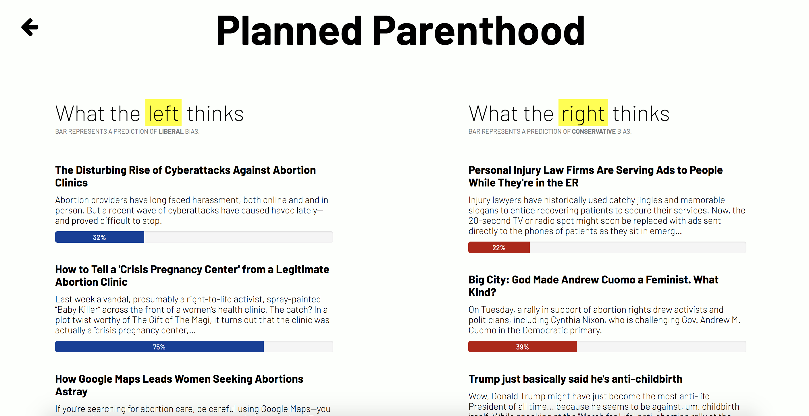
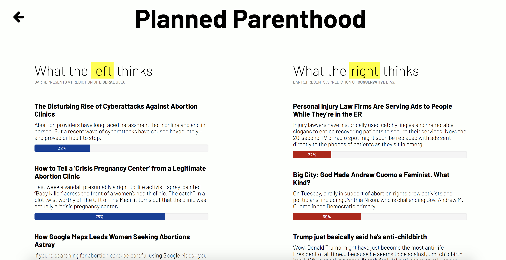

Middle Ground is a web app providing a non-biased perspective on political issues by featuring articles on either side of the debate, allowing the user to make an informed opinion on the subject of question.
This idea originally stemmed from the hot topic of "fake news", which has been plaguing the world as of late. In order to combat this issue, my team decided to create a platform that challenged users to form their own opinions based on articles that leaned both left and right. In order to achieve this, we used the News API to pull articles from our topic of choice, and the indico sentiment analysis API, which determined a political rating for an article based on the text.
Developed at SheHacks Boston 2018 with a group of girls from Northeastern University. Check it out here!
 
